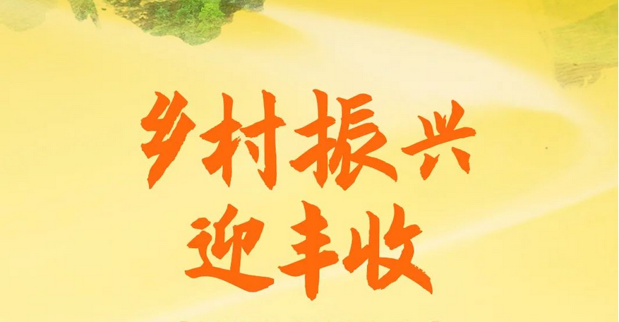

01
RURAL REVITALIZATION
乡村振兴战略
实施乡村振兴战略，要坚持党管农村工作，坚持农业农村优先发展，坚持农民主体地位，坚持乡村全面振兴，坚持城乡融合发展，坚持人与自然和谐共生，坚持因地制宜、循序渐进。
巩固和完善农村基本经营制度，保持土地承包关系稳定并长久不变，第二轮土地承包到期后再延长三十年。确保国家粮食安全，把中国人的饭碗牢牢端在自己手中。加强农村基层基础工作，培养造就一支懂农业、爱农村、爱农民的"三农"工作队伍。
30年土地承包延长
14亿粮食安全保障